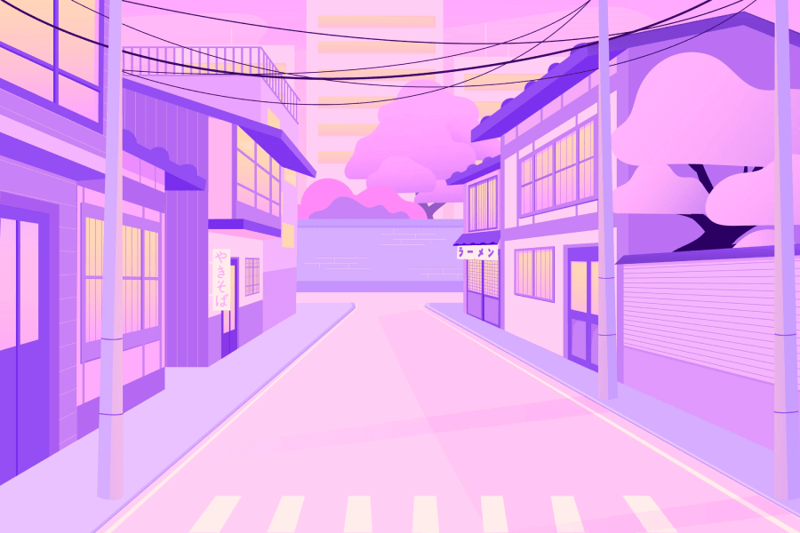

Многозадачность
Кажется, что можно делать несколько дел одновременно. На деле мозг быстро переключается между ними, тратит силы на каждое новое начало — и ни одному занятию не достаётся полного внимания.
Почему так происходит и что с этим делать
Кажется, что можно делать несколько дел одновременно. На деле мозг быстро переключается между ними, тратит силы на каждое новое начало — и ни одному занятию не достаётся полного внимания.
Сладкое и тяжёлая пища могут ненадолго изменить уровень энергии, но затем внимание снова рассеивается. Регулярные приёмы пищи и вода помогают сохранять ровный темп.
Уведомления и привычка проверять экран прерывают ход мысли. Даже короткое отвлечение требует времени, чтобы вернуться к задаче.
Когда дел много, трудно понять, с чего начать. Выберите одно ближайшее действие и запишите остальные задачи, чтобы не держать их все в голове.
Без пауз внимание устаёт. Короткий перерыв помогает восстановить силы и вернуться к работе с ясной головой.
Посторонние звуки и разговоры конкурируют с задачей за внимание. Если возможно, выберите тихое место или включите спокойный фоновый звук.
Разделите большую задачу на несколько коротких шагов. Сосредоточьтесь только на первом и отметьте его выполнение.
Закройте ненужные вкладки, отключите уведомления и оставьте перед собой только то, что нужно для текущего дела.
Чередуйте работу и отдых. Встаньте, потянитесь или ненадолго посмотрите в окно — затем спокойно возвращайтесь к задаче.


